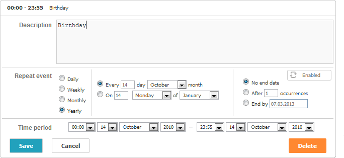
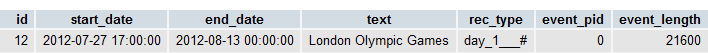
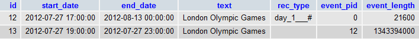
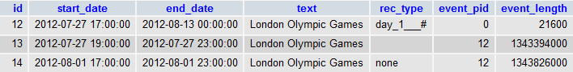

By default, the scheduler doesn't support recurring events. To enable such support, you need to include a special extension file on the page - ext/dhtmlxscheduler_recurring.js.
<script src="ext/ext/dhtmlxscheduler_recurring.js" type="text/javascript"></script>Once the support for recurring events is activated, the lightbox starts looking as shown below:

The library provides the following options to configure recurring events:
scheduler.config.repeat_date = "%m/%d/%Y";
scheduler.config.include_end_by = true;
...
scheduler.init('scheduler_here', new Date(2019, 7, 5), "month");
Related sample: Recurring events
By default, once the recurring extension is enabled, the lightbox starts to have one more section - "Repeat event". And the default definition of the 'recurring' lightbox starts to be as in:
[
{name:"description", height:130, map_to:"text", type:"textarea" , focus:true},
{name:"recurring", height:115, type:"recurring", map_to:"rec_type",
button:"recurring"},
{name:"time", height:72, type:"time", map_to:"auto"}
];
You may add any extra sections, but need to preserve both the "recurring" and "time" sections. Also, it's required to place the "time" section after the "recurring" one.
Related sample: Recurring events
A recurring event is stored in the database as a single record that contains all fields of a regular event plus 3 additional:
So, the connector query will have a look similar to the next one:
$scheduler->render_table("events_rec","event_id",
"start_date,end_date,text,rec_type,event_pid,event_length");
In a usual case, in addition to the mandatory fields you can extract any extra data from the DB.
However, fields start_date and end_date slightly change their meaning:
For example, a recurring event that starts on January 3, 2019 at 10:00, repeats every day and ends on January 13, 2019 at 12:00, will be presented in the database as follows:
id:1,
start_date:"2019-01-03 10:00:00",
end_date:"2019-01-13 00:00:00",
text:"some_text",
details:"",
rec_type:"day_1___",
event_length:"7200",
event_pid:"0" //0 for the parent events or the ID of parent events for sub-events
The client side gets data from the rec_type field as a string of the following format:
[type]_[count]_[day]_[count2]_[days]#[extra]
where:
Examples of the rec_type data:
The double or triple underline indicates that the related parameters of the string are omitted.
A recurring event is stored in the database as a single record that can be splitted up by Scheduler on the client side. If you need to get dates of separate events on the server side, use a helper library for parsing recurring events of dhtmlxScheduler on ASP.NET/ASP.NET Core/PHP.
You will find the ready libraries on our GitHub:
There is a possibility to delete or edit a particular occurrence in a series.
You are a fan of the Olympic Games and want to watch the upcoming London Olympic Games 2012 (27 July - 12 August) as much as possible. So you decide to create a recurring event that starts at 17.00 (the end of your work day) and ends at 23.00 (the time for you to be asleep). But as the Opening Ceremony starts only at 19.00 you want to edit the first event in the series (at this particular day) and set the time period from 19.00 to 23.00. Also, you remember that on August 1, 2012 you have deadline and most probably you will be at home too late to watch anything. So you need to delete August 1, 2012 from the series as well.
Consequently, we should have 3 records referring to our recurring event in the DB.
Creating the recurring event:

Editing July 27,2012:

Deleting August 1,2012:

In addition to extra fields, a specific logic needs to be added to the server-side controller:
You can find complete code examples here
If you use PHP Connector library, the server code may look like the following:
function delete_related($action){
global $scheduler;
$status = $action->get_status();
$type =$action->get_value("rec_type");
$pid =$action->get_value("event_pid");
//when series changed or deleted we need to remove all linked events
if (($status == "deleted" || $status == "updated") && $type!=""){
$scheduler->sql->query("DELETE FROM events_rec WHERE
event_pid='".$scheduler->sql->escape($action->get_id())."'");
}
if ($status == "deleted" && $pid != 0){
$scheduler->sql->query("UPDATE events_rec SET rec_type='none' WHERE
event_id='".$scheduler->sql->escape($action->get_id())."'");
$action->success();
}
}
function insert_related($action){
$status = $action->get_status();
$type =$action->get_value("rec_type");
if ($status == "inserted" && $type == "none")
$action->set_status("deleted");
}
$scheduler->event->attach("beforeProcessing","delete_related");
$scheduler->event->attach("afterProcessing","insert_related");
To add for users the possibility to move the entire sequence while dragging recurring events, add the next code before scheduler initialization:
scheduler.attachEvent("onBeforeEventChanged",function(dev){
var parts = scheduler.getState().drag_id.toString().split("#");
if (parts.length > 1) {
var series = this.getEvent(parts[0]);
series.start_date.setHours(dev.start_date.getHours());
series.start_date.setMinutes(dev.start_date.getMinutes());
series.event_length = (dev.end_date - dev.start_date) / 1000;
setTimeout(function(){
scheduler.addEvent(series);
}, 1);
return false;
}
return true;
});
Starting from version 4.2, dhtxmlScheduler allows you to specify a custom HTML form for the 'recurring' block of the lightbox.
Lets start with an example. Let's imagine you want to remove the 'monthly' and 'yearly' repeat types and have the 'no end date' option for all events (i.e. remove the block for specifying the recurrence end).
<div class="dhx_form_repeat" id="my_recurring_form"> <form>
<div>
<select name="repeat">
<option value="day">Daily</option>
<option value="week">Weekly</option>
</select>
</div>
<div>
<div style="display:none;" id="dhx_repeat_day">
<input type="hidden" name="day_type" value="d"/>
<input type="hidden" name="day_count" value="1" />
</div>
<div style="display:none;" id="dhx_repeat_week">
Repeat every week next days:<br />
<label><input type="checkbox" name="week_day" value="1" />Monday</label>
<label><input type="checkbox" name="week_day" value="2" />Tuesday</label>
<label><input type="checkbox" name="week_day" value="3" />Wednesday</label>
<label><input type="checkbox" name="week_day" value="4" />Thursday</label>
<label><input type="checkbox" name="week_day" value="5" />Friday</label>
<label><input type="checkbox" name="week_day" value="6" />Saturday</label>
<label><input type="checkbox" name="week_day" value="0" />Sunday</label>
<input type="hidden" name="week_count" value="1" />
</div>
</div>
<input type="hidden" value="no" name="end">
</form>
</div>
scheduler.config.lightbox.sections = [
{name:"description", height:130, map_to:"text", type:"textarea" , focus:true},
{name:"recurring", type:"recurring", map_to:"rec_type", button:"recurring",
form:"my_recurring_form"}, {name:"time", height:72, type:"time", map_to:"auto"}
];
You can find the default HTML structure of the lightbox's recurring block for different languages at the 'scheduler\sources\locale\recurring\' directory.
For example,for the English locale you need to see the 'scheduler\sources\locale\recurring\repeat_template_en.htm' file.
Basically, the recurring block of the lightbox contains 3 groups of controls:
1) Controls for choosing the type of recurrence. These inputs have the name 'repeat' and one of the following values: 'daily', 'weekly', 'monthly', 'yearly'. The form must have at least one 'repeat' input with the value. You can use radio buttons, selects or set the default type in the hidden input.
Consider the following examples, each of those is a valid way for selecting the type of recurrence in the form.
<label><input type="radio" name="repeat" value="day" />Daily</label><br />
<label><input type="radio" name="repeat" value="week"/>Weekly</label><br />
<label><input type="radio" name="repeat" value="month" />Monthly</label><br />
<label><input type="radio" name="repeat" value="year" />Yearly</label>
<select name="repeat">
<option value="day">Daily</option>
<option value="week">Weekly</option>
</select>
<input type="hidden" name="repeat" value="day" />2) A block for configuring the recurrence depending on the repeat type. For example, for the 'Daily' repeat type, the block will take the following structure:
<div class="dhx_repeat_center">
<div style="display:none;" id="dhx_repeat_day">
<label>
<input class="dhx_repeat_radio" type="radio"
name="day_type" value="d"/>Every
</label>
<input class="dhx_repeat_text" type="text"
name="day_count" value="1" />day<br>
<label>
<input class="dhx_repeat_radio" type="radio"
name="day_type" checked value="w"/>Every workday
</label>
</div>
...
</div>
Note, that the markup which is related to a specific type of recurrence can be wrapped in a div with the id in the following format "dhx_repeat_<repeat type>", e.g. "dhx_repeat_day". In this case it will be displayed only when the appropriate repeat type is selected.
3) Controls for specifying the end of recurrence. The end of recurrence is defined by input with the name 'end'.
Possible values are 'no', 'date_of_end', 'occurences_count'.
Similar to the 'repeat' controls, the form must have at least one input of this type.
<div class="dhx_repeat_right">
<label>
<input type="radio" name="end" value="no" checked/>No end date
</label><br />
<label>
<input type="radio" name="end" value="date_of_end" />After</label>
<input type="text" name="date_of_end" />
<br />
<label>
<input type="radio" name="end" value="occurences_count" />After</label>
<input type="text" name="occurences_count" value="1" />Occurrences
</div>
The date for the 'date_of_end' mode must be defined in an input named 'date_of_end'. The same works for the 'occurences_count' mode,
that takes the number of occurrences from an input named 'occurences_count'.
You can remove any type or predefine it in a hidden input:
<input type="hidden" name="end" value="date_of_end" />
<input type="hidden" name="date_of_end" value="01.01.2016" />
Please, before starting to apply a custom configuration to the lightbox's recurring block, note the following things:
Beware, dhtmlxScheduler doesn't work with your original HTML form and just creates it's copy in the lightbox's template.
For example:
<input onclick="handler()">addEventListener(node, "click", function(){...})